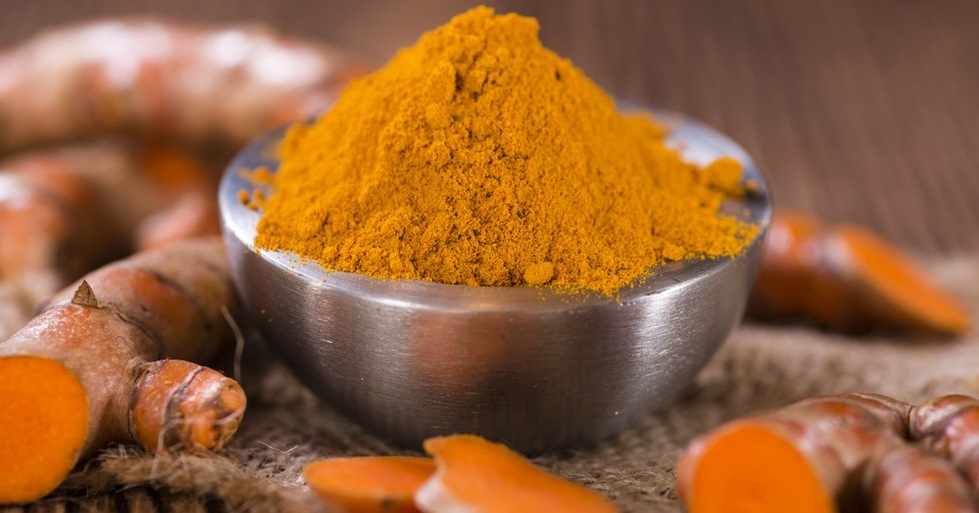
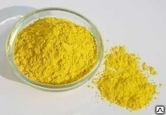
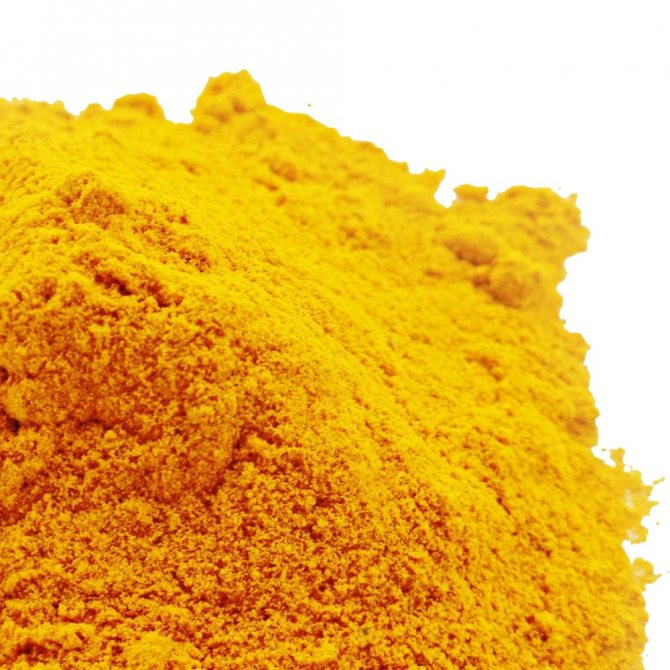
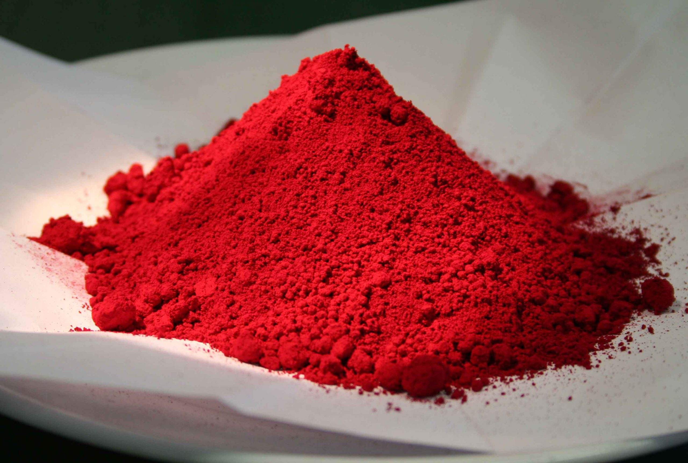
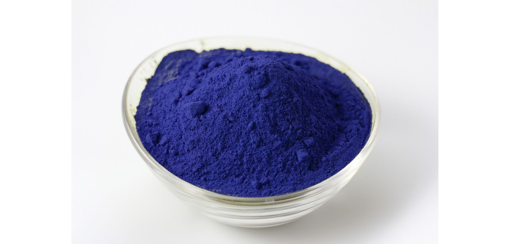
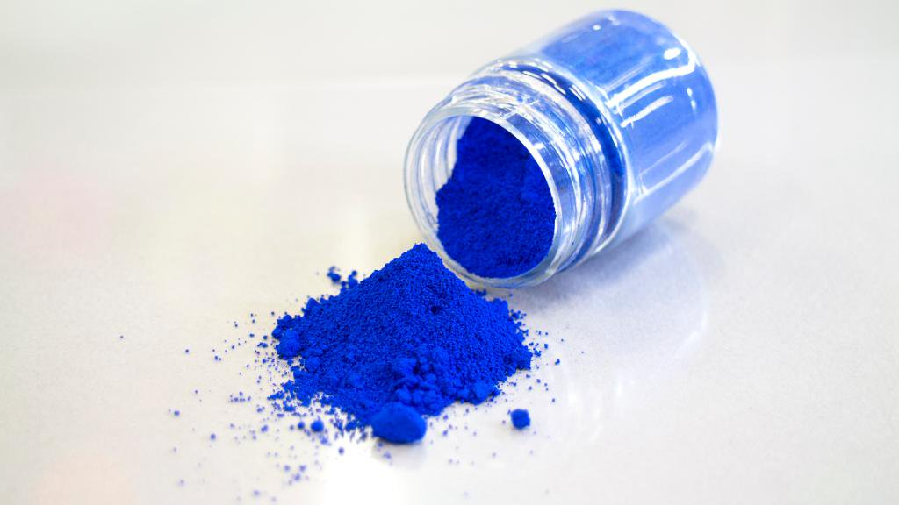
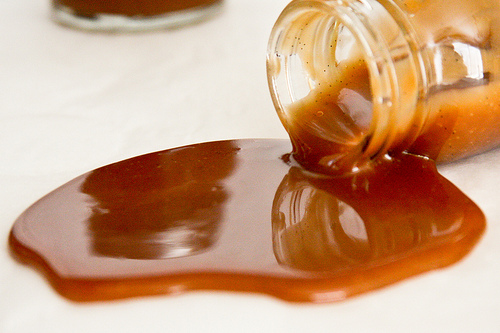

Пищевой краситель или цветовая добавка-это любой краситель, пигмент или вещество, которое придает цвет при добавлении в пищу или напитки.
Они бывают во многих формах, состоящих из жидкостей, порошков, гелей и паст.
Натуральные красители обычно выделяют из природных источников в виде смеси различных по своей химической природе соединений,
состав которой зависит от источника и технологии получения, в связи с чем обеспечить его постоянство часто бывает трудно.
Среди натуральных красителей необходимо отметить каротиноиды (углеводороды из апренового ряда и их кислородсодержащие производные),
антоцианы (природные фенольные соединения), флавоноиды, хлорофиллы (природные пигменты, придающие зелёную окраску).
 В отличие от натуральных, искусственные красители не имеют запаха, вкуса,
не обладают биологической значимостью.
Это растворимые в воде, этиле или масляных жидкостях химические
органические соединения. Выпускают их чаще в виде натриевой или
кальциевой солей.
В отличие от натуральных, искусственные красители не имеют запаха, вкуса,
не обладают биологической значимостью.
Это растворимые в воде, этиле или масляных жидкостях химические
органические соединения. Выпускают их чаще в виде натриевой или
кальциевой солей.
ДОБАВЛЕНИЕ ПИЩЕВЫХ КРАСИТЕЛЕЙ В ПИЩУ
Кроме вкуса и текстуры, цвет тоже играет важную роль при выборе продуктов в магазине. С 19в, Пищевые красители начинают использоваться
более широко. В наше время практически не осталось продукции, в которой бы не применялись пищевые красители. Сейчас практически вся
магазинная продукция содержит в себе различные красители.
ВЛИЯНИЕ ВСЕХ ПИЩЕВЫХ КРАСИТЕЛЕЙ НА ОРГАНИЗМ

Е-100 Куркумин
Благодаря особенности пищевой добавки E100 – окрашивать в ярко-желтый, или оранжевый цвет волокна животного и растительного происхождения, она используется в пищевой промышленности, как натуральный и безвредный краситель, аналогичный по своим свойствам искусственным.Куркумин – незаменимая пищевая добавка в настоящее время, является абсолютно безопасной и натуральной.
Вывод:Безопасен

Е-102 Тартразин
Тартразин – представитель синтетически полученных красителей. Пищевая добавка имеет свойство окрашивать продукты в желтый цвет или возвращать им естественную первоначальную окраску.Исследования и опыты, проводимые с применением тартразина на лабораторных животных, а также с участием людей, однозначно свидетельствуют о небезопасности вещества для человеческого здоровья.Вызывает алергические реакции только при огромных дозах.
Вывод:Опасен в большых дозах

Е-104 Желтый хинолиновый
Краситель Е104 относится к веществам со средним уровнем опасности, ближе к опасным. Его суточная норма для взрослого строго регламентирована, но даже в таком незначительном количестве вещество способно причинять вред человеческому организму.В России и странах ЕС разрешен для широкого круга пищевых продуктов. В США не разрешен."
Вывод:избегать при возможности

Е-123 Амарант
Опыты с участием лабораторных крыс показали, что, в результате употребления амаранта, у грызунов повышался выход различных опухолей, что указывает на его канцерогенный эффект. Из-за своих свойств аллергена, вещество крайне опасно для людей с аллергией и астматиков, оно может вызывать крапивницу, зуд, хронический насморк.
Вывод:Опасен

Е 131 Синий патентованный V
После детального изучения воздействия синтетической добавки Е-131 на человеческое здоровье норму суточного допустимого потребления специалисты устанавливать не стали. Ее разрешается использовать в строго установленных нормах при производстве некоторой пищи.
Вывод:избегать при возможности

Е-132 Индиготин
Один из наименее стабильных пищевых красителей. Стабильность по отношению к кислотности среды, нагреванию, свету, щелочам, кислотам, консервантам . Стабильность в кондитерских изделиях и напитках.Данный краситель, как пищевая добавка разрешен к применению и производству во многих странах мира.ыявлены некоторые неприятные реакции на прием этого красителя.
Вывод:Опасен

E-150 Сахарный колер ,карамель
Пищевая добавка “сахарный колер” – возможно, один из самых древних красителей и подсластителей, известных человеку. С того самого момента, как начал производиться сахар, человек начал изучать его свойства и попробовал его нагревать, получив в итоге карамель.Чаще всего коллер исполбзуется в кондитерской продукции.
Вывод:Безопасен